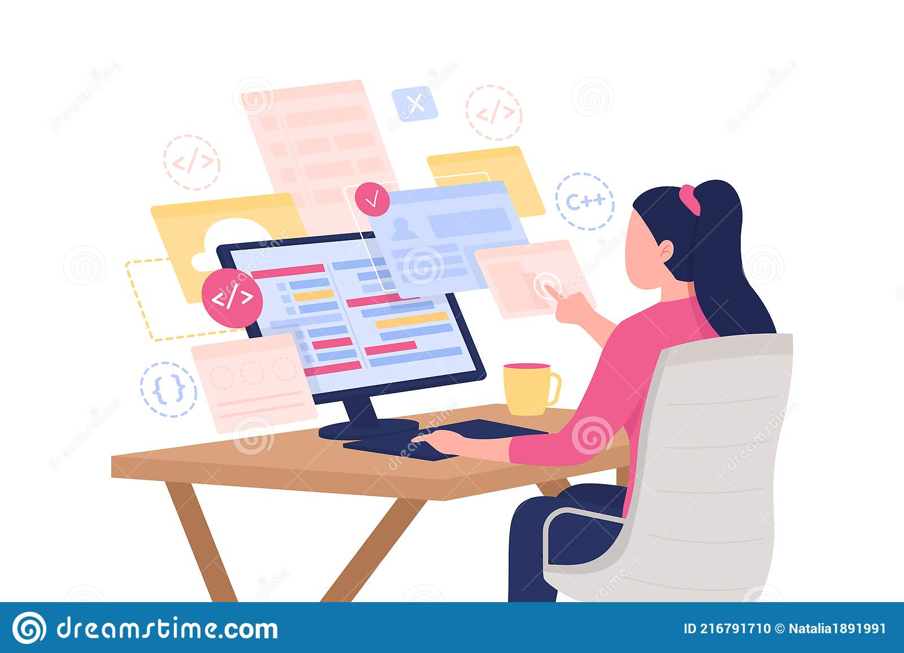

About Me
Posted by Damla Buse Ağaçdiken on Wednesday, March 28th 2023
I am Damla Buse Ağaçdiken. I live in Mersin, Türkiye. I am 24 years old, I am married, and I have two cats.
In this webpage, I am going to talk about my software development journey.
Why Software Development?
I am a linguistics student. However, I realized that I did not like
enough my field. I have always been interested in technology.
For 2-3 years AI has looked very interesting to me.I have been
researching software nearly for 2 years and I recently made a choice
between linguistics and software.
The winner is software. :)
I have 3 main motivation;
- Loving technology
- Chance of working remote
- Don't love my current field
Note: I have also a robotics company that makes solar panel cleaning robots. You can visit my company's website
What Are My Aims About Software?
I have lots of aims about software development. However, these will be my first steps;
- Learning HTML,CSS and JavaScript
- Learning frameworks about front-end
- Being a front-end developer!(I know this not that much easy😃)
That is enough for now! I hope, I will see you in my next project:)